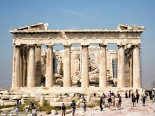

Афіни - стародавнє місто
Ласкаво просимо на сайт про чудове місто Афніни! Тут ви знайдете цікаву інформацію про наше місто та його найважливіші аспекти.Наш сайт присвячений просуванню та відображенню багатошарової культурної, історичної та соціальної спадщини міста Афніни. Ми прагнемо створити простір, де мешканці та відвідувачі можуть дізнатися більше про це чудове місто, його історію, культуру, освіту, бізнес та туризм, а також взаємодіяти та спілкуватися один з одним.На головній сторінці ви також знайдете швидкий доступ до основних розділів нашого сайту, щоб легко переходити до потрібної інформації. Ми прагнемо зробити ваше відвідування нашого сайту якнайбільш зручним та цікавим.
столиця Греції. Розташоване на відстані 8 км на північний схід від порту Пірей у затоці Егейського моря, побудоване навколо скелястих пагорбів Акрополіса заввишки 169 м і Ареопага заввишки 112 м. Лежить на півдні центрального плато Аттики, де протікають гірські потоки Кефіс та Іліссос.Стародавні Афіни були потужним містом-полісом, важливим просвітницьким центром. Тут народились Сократ, Перикл, Софокл; Платон започаткував «академію», а Арістотель — ліцей. Афіни — колиска Західної цивілізації, батьківщина світової демократії.

Буштрук Влад 8-В